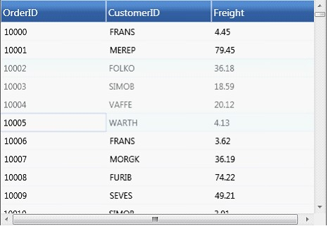
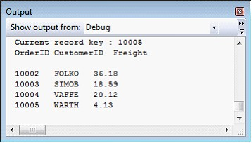

GridData control allows you to select the required records and retrieve selected record values. Once a record is selected, it will be added to the GridDataControl.SelectedItems collection and GridDataControl.SelectedItem highlights the current record in selection.
Following is the sample code snippet that iterates through the SelectedItems collections and prints the values of those records that are in selection.
|
[C#]
Console.WriteLine("Current record key : "+ ((Orders)this.gdc.SelectedItem).OrderID);
Console.WriteLine("OrderID" + "\t" + "CustomerID" + "\t" + "Freight"); Console.WriteLine(); foreach (object obj in gdc.SelectedItems) { Orders c = (Orders)obj; Console.WriteLine(c.OrderID + "\t" + c.CustomerID + "\t" + c.Freight); } |
Output

Figure 104: Grid with few records selected

Figure 105: Printed values of selected records